Childline India
Childline India is a Line Call service that helps indian children that are in situations of abuse or violence to get support. It is present in the whole country and 24 hours a day. Children are able to call any time and volunteers go directly to the point of conflict. They also collaborate hand to hand with other national services to organize events or bigger campaigns for this cause. My aim was to highlight the donation path, to make the foundation grow in resources to help children in need. Essential information has been organized and more attractive content related with the campaigns has been added to engage with users.
Overview and main problems
This is the original website of Childline. It has evident problems organizing the information properly, and the hierarchies are messy and really confusing. The main income generated by the user donations needed to be more evident and appealing to the user.
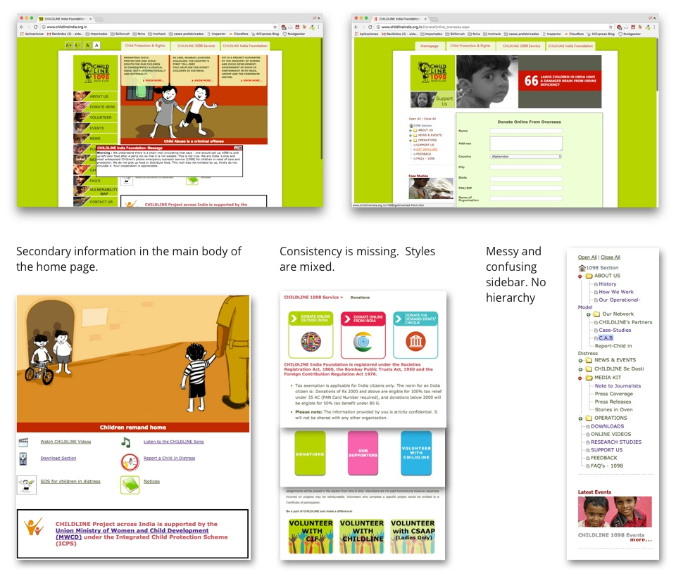User research & User insights
Two segments of user has been researched in this flow. On one side, the
potential donors or the skeptics, the ones that are sensitive to human and
social rights but don't trust in NGOs because they think they are not
transparent with money. They usually trust in small projects and with
something in return, like crowdfunding model. On the other hand, the usual
donors or the motivated, users that are used to donate and they usually
collaborate with well known platforms.
After the research, the main goals of the site were:
- Transparency
- Crowdfunding flow
- Engaging content
- To show process and results
These are some of the answers of the surveys I did to current donors and skeptic or potential donors.
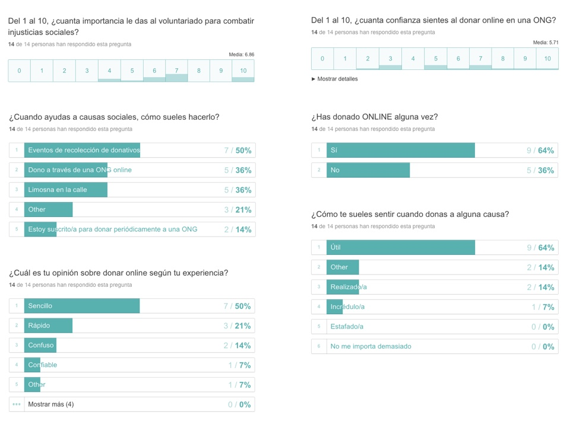Affinity Diagram
With all the answers gathered, I started organizing them by topics, pain points and recurrent answers
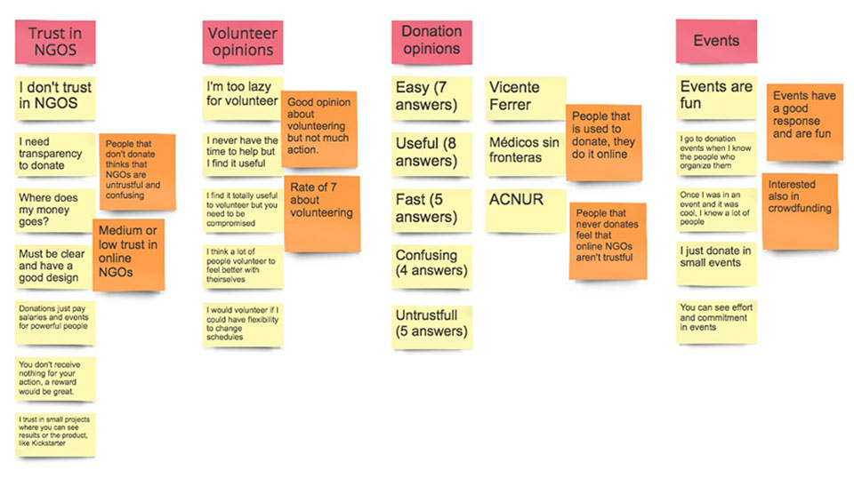Mind map
The mind map is useful to organize the different ideas by finding the root of the problem or the statement.

User personas
Here there are the potential donor and the usual donor User Personas research:
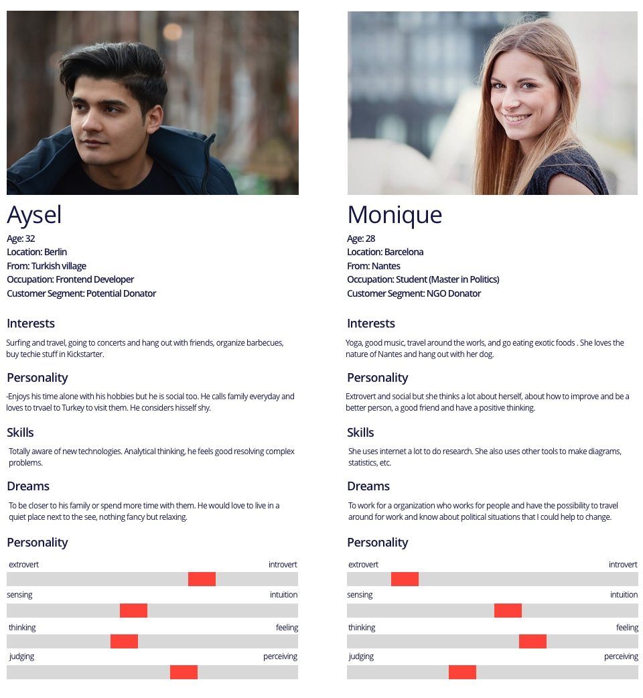Empathy map
I focused in the potential donor user persona to develop an empathy map. By thinking as my user I could see his main pain points and empathize with his needs and expectations.
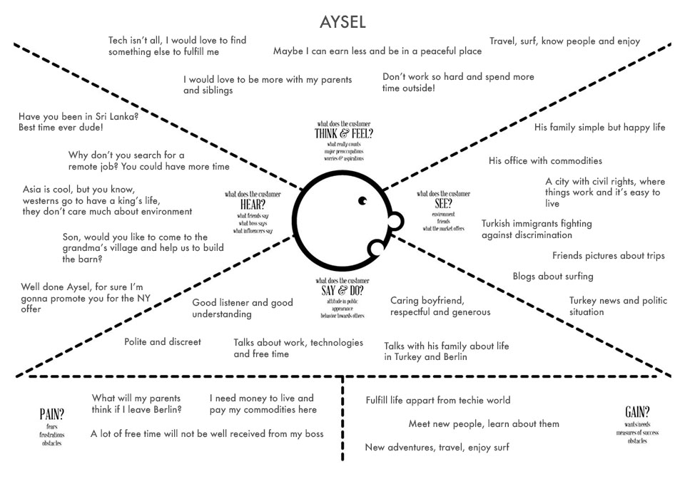User Journey
The user journey allows to imagine a happy path of the analized user, how he reaches the product, what does he thinks while surfing the website, how are they needs accomplished and how is his mood in the whole process.

Wireframes
These are the first mid-wireframes I made to understand the donation process of the user, going through a reward and having the chance to donate also the reward.
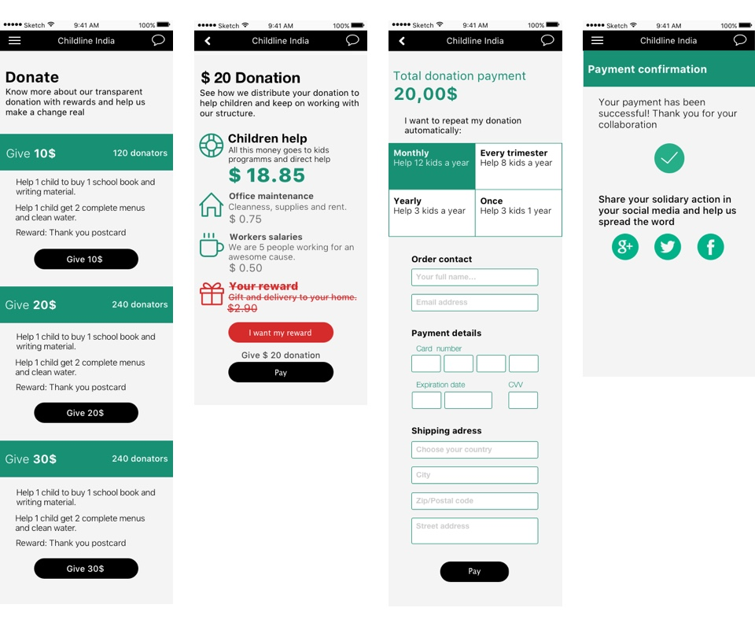Moodboards
The essential keywords of this project are transparency, engaging experience and kids. My research in the touch and feel of the new website drove me to bright and flat colors to represent a closer approach to the children cause, big kids photos and powerful typography in a dark grey to be bold in the message to spread. I also found layout structures that were suitable for me, like colored cards or progress bars.
 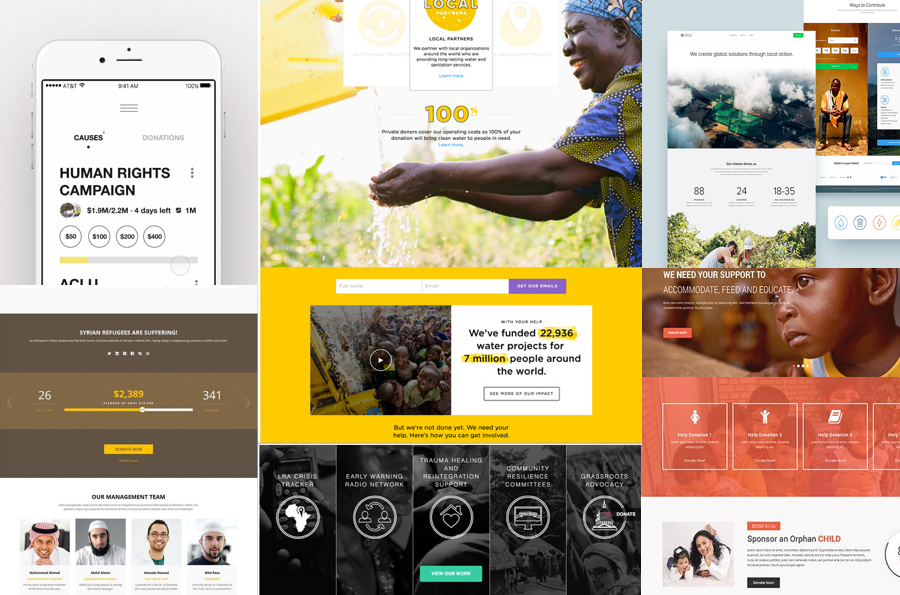
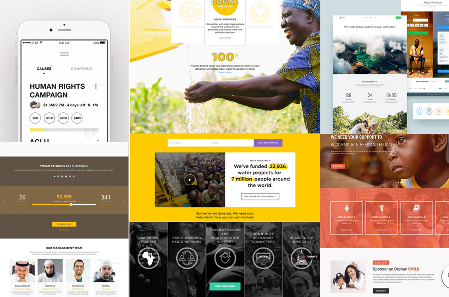
Colors
The palette is composed by 5 main bright and vibrant colors, that remind me of an indian textile, joyful and playful. The color is also present in bitonal photographies of children, mixed with a navy blue. The palette completes with a dark and a light grey and the white color that gives more power to the whole palette.
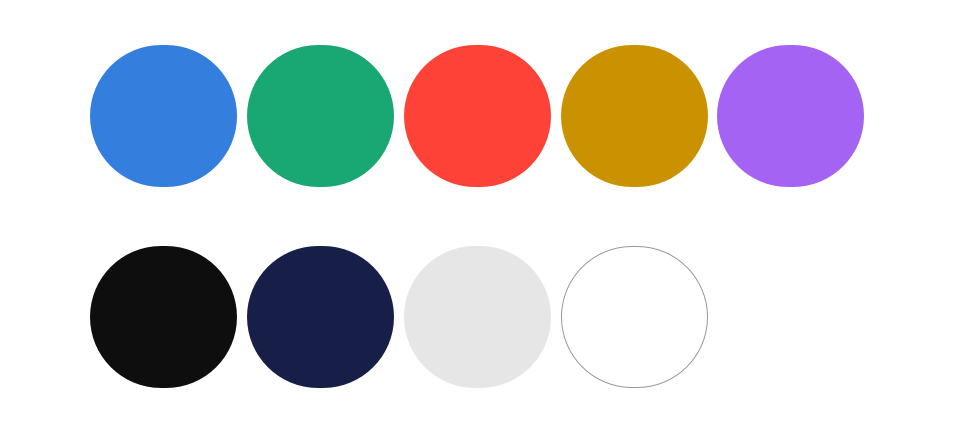Photography
The approach to the whole website was to be transparent but bold. The content of the projects has been also built around these two concepts. Photography bounce between no-filtered colors, to show the real experience of projects, and duotonal colors, a more aspirational approach to the concept of joy in childhood.
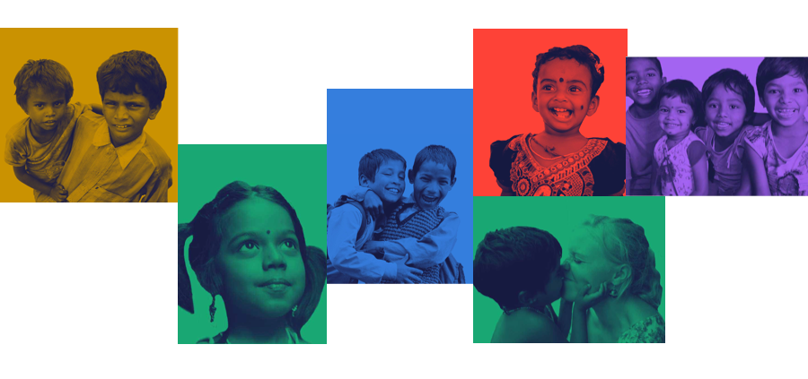Typography
Brandon Grotesque is used mainly in high case as the display typography. Its attitude combined with its humanistic approach makes it perfect for strong messages in an NGO platform. For the reading texts, Open Sans is a clear, modern and clean typography that allows to read long texts.

Mobile UI Design
Based on our target user, I wanted to keep the site simple, clear and transparent. I started with a mobile-first version were projects and donations with rewards are highlighted.

Payment flow
Payment flow is a key flow in the website. Users choose a project to donate and receive a reward and then they can see how the NGO distribute the money. The transparency is visualy shown as user can see that part of the donation allows to pay salaries or office expenses, to keep the NGO structure alive. Also users can decide to keep their reward or increase the children help not taking it
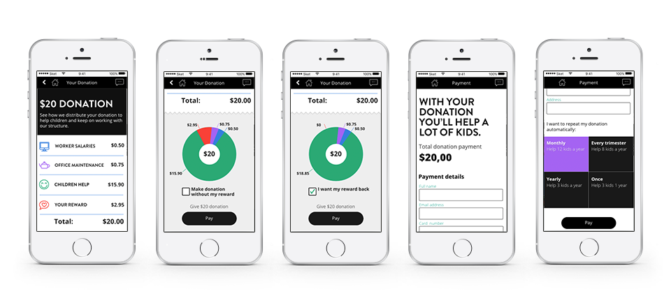Interactions
Interactions are important to focus the attention of the user in some important parts of the flow. I have highlighted the project goals and the progress bars of the campaigns with animations.
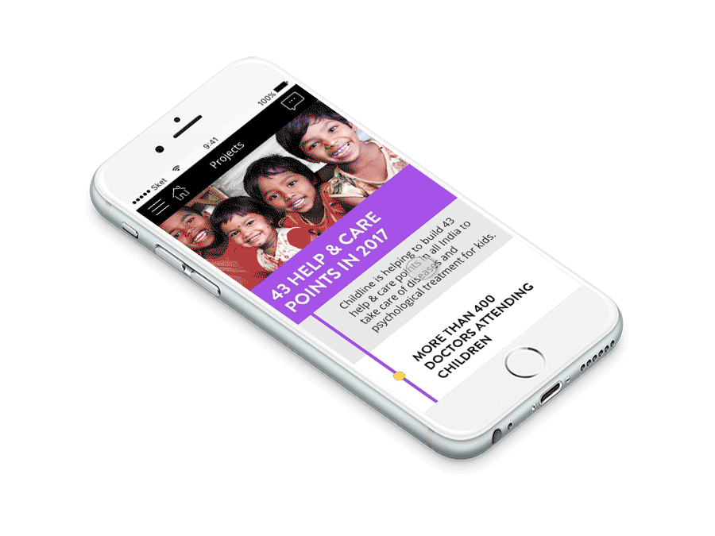